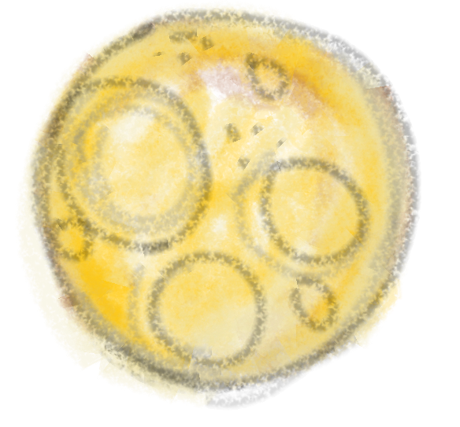

?
Notice
Pause at the thing everybody else walked past.
Field note 001 For the wonderfully curious
A playful place for curious students, thoughtful educators, imaginative professionals and grown-ups who miss asking why?
01 You do not need a perfect plan. Curiosity is allowed to wander.

WONDER IS NOT A CHILDHOOD PHASE
Map of possibilities Nine places to begin
Each world holds a different kind of curiosity. Visit one, visit all nine, or change your mind halfway through. That counts as exploring.
For soft restarts, brave first steps and promises small enough to keep.
Begin here ↗ 02A cabinet of peculiar thoughts, unfinished answers and questions worth keeping.
Start wondering ↗ 03Questions about mistakes, accountability, relationships and workplace repair.
Becoming Atlas ↗ 04A workshop for turning someday into one small, imperfect thing you can do today.
Make something ↗ 05A museum of wrong turns, glorious flops and the lessons hiding inside them.
Meet the mistakes ↗ 06A quiet place for tired minds to rest, notice joy and remember what matters.
Find your spark ↗ 07Books, poems and explanations that make complicated ideas feel human again.
Open a story ↗ 08Thoughtful tools and shared space for the educators who keep curiosity alive.
For educators ↗ 09Learning adventures built for curious humans—not worksheet-completing robots.
Launch a quest ↗How wonder moves A very unofficial method
Pause at the thing everybody else walked past.
Make one small, delightfully imperfect attempt.
Save the question, the lesson and the funny failure.
Three doorways One wonderfully complicated human
Make room for the human behind the job: the difficult days, ideas nobody asked about, small wins and work that could feel better.
↗ W / 02A space beyond productivity for ordinary beauty, strange questions, half-made dreams and the parts of you still becoming.
↗ W / 03Playful, meaningful experiences where students and educators can question, create, reflect and learn together.
↗For educators & schools Curiosity belongs in the timetable
Use thoughtful missions, creative investigations and gentle reflection to help students grow in confidence—not simply complete another task.
Tonight’s question from somewhere near the moon